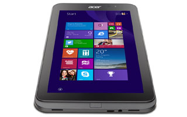

Acer Iconia W4-820
The Iconia W3, powered by an Intel Cedar Trail-class processor, delivered less-than-stellar performance, too-short battery life, and was saddled with a mediocre display.Fortunately for Microsoft, none of that seems to have hindered its effort to interest other manufacturers in building Windows 8 tablets. Acer has at least half-a-dozen competitors today, and its latest effort—the Iconia W4—is much better than last year’s model.
 Knock it for the Windows 8 launch. Lay into it for how it debuted the Xbox One. But, when it comes to its latest product, the Surface Pro 3, don't pull out the torches and pitchforks just yet - Microsoft is onto something here. Over the past few years, the Redmond, Wash. Windows maker has proved to be one of the bolder technology companies, for better or worse. Microsoft clearly isn't afraid to fall on its face in the hope of landing on what in the world tech users want next in this turbulent market, and the Surface Pro 3 is - well, it just might be an exception.
Knock it for the Windows 8 launch. Lay into it for how it debuted the Xbox One. But, when it comes to its latest product, the Surface Pro 3, don't pull out the torches and pitchforks just yet - Microsoft is onto something here. Over the past few years, the Redmond, Wash. Windows maker has proved to be one of the bolder technology companies, for better or worse. Microsoft clearly isn't afraid to fall on its face in the hope of landing on what in the world tech users want next in this turbulent market, and the Surface Pro 3 is - well, it just might be an exception.